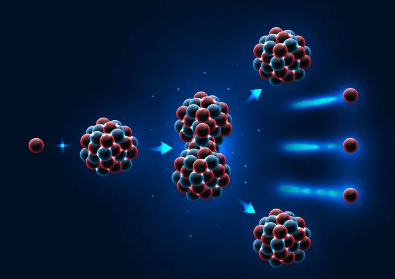

 "A Física quântica, também conhecida como mecânica quântica, é uma grande área de estudo que se dedica em analisar e descrever o comportamento dos sistemas físicos de dimensões reduzidas, próximos dos tamanhos de moléculas, átomos e partículas subatômicas."
"Física Nuclear é o estudo das partículas constituintes dos núcleos atômicos, como prótons e nêutrons, e das interações existentes entre elas. Essas interações são capazes de manter as partículas unidas em distâncias extremamente pequenas, da ordem de poucos nanômetros (10-9 m). Alguns exemplos de fenômenos estudados pela Física Nuclear são decaimentos radioativos, fissões nucleares, fusões nucleares, etc."
"Nos últimos anos, a Física Nuclear tem possibilitado, por meio da medicina nuclear, o surgimento de tecnologias de grande impacto à saúde humana. Um crescente número de exames de imagem tem sido realizado com uso de diferentes tipos de radiação e partículas. Além disso, um enorme número de pacientes recebe tratamento oncológico por meio da radiação produzida por aceleradores de partículas ou fontes naturais de radiação, como os radioisótopos césio-137, iodo-131, entre outros encontrados na natureza. Atualmente, existem tratamentos de câncer avançados, com menos efeitos colaterais, que são capazes de destruir os tecidos afetados pelo câncer por meio da emissão de prótons, nêutrons, íons pesados e radiação eletromagnética ionizante"